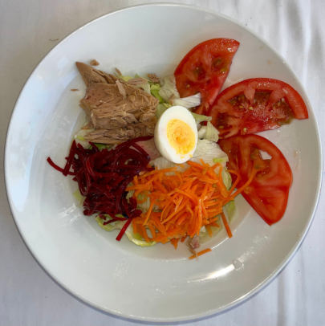
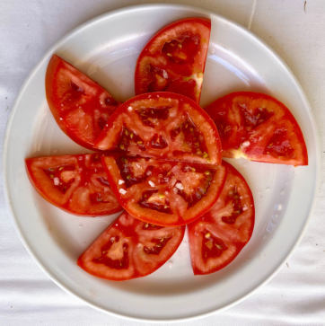
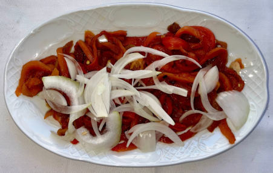
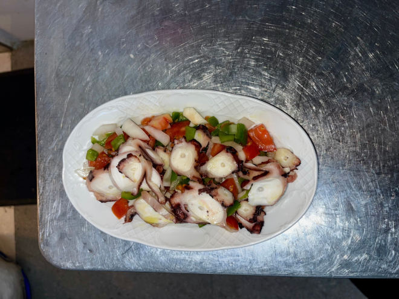
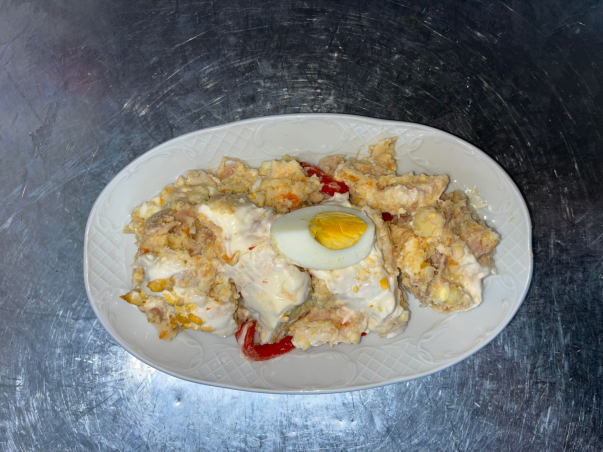

Ensalada normal
5.70 €
RESTAURANTE · BAJONDILLO
CASA FUNDADA EN 1966

Bienvenidos · Welcome
Nuestra carta, a tu ritmo.
RESTAURANTE · DESDE 1966
Bajondillo · Torremolinos
Un comienzo fresco






